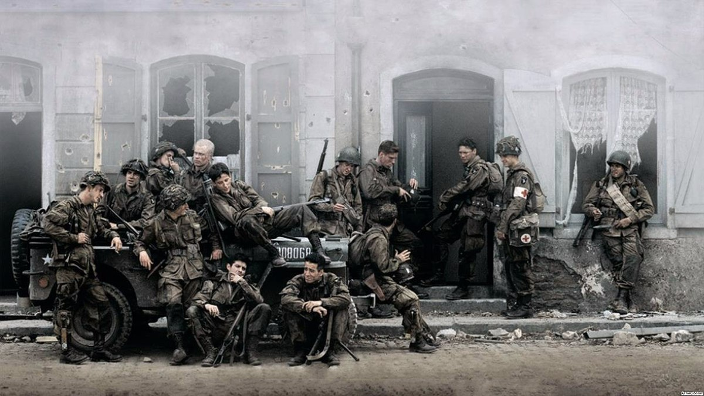

Band of Brothers acompanha a história da "E" Easy Company, o 506º Regimento da 101ª Divisão Aerotransportada,
desde o treinamento inicial da equipe, em 1942, até o final da 2ª Guerra Mundial. Com um papel primordial para a resolução do
conflito, eles foram uma das unidades de maior sucesso na história militar americana.
Nome Original: Band of Brothers | Nome PT-BR: Irmãos de Guerra
Diretores: Phil Alden Robinson (1º Episódio), Richard Loncraine (2º Episódio), Mikael Salomon (3º Episódio) (10º Episódio), David Nutter (4º Episódio), Tom Hanks (5º Episódio), David Leland (6º Episódio), David Frankel (7º Episódio) (9º Episódio), Tony To (8º Episódio)